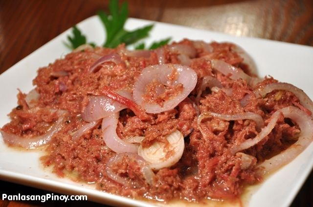

Recipe Highlight — Delimundo Corned Beef
| Ingredients: | ||
|---|---|---|
| 1 Onion | 1 tbsp Minced Garlic | 1 Can of Delimundo Ranch Style Corned Beef |
| 1 tbsp Salt | 1/2 cup Milk | Chives or Parsley |
Procedure:
It's straightforward but there are a few specific tips and steps to make it perfect:
- Cut potatoes into equal pieces.
- Boil in salted water until very soft and tender.
- Drain, return to pot, and mash with butter and milk or cream.
- Mash until creamy and fluffy.
- Transfer to serving bowl and make gentle swirls on top.
- Drizzle with butter for extra richness and presentation!